Tutorial: Steady state thermal stress analysis
Coupled studies require an advanced simulation license.
Thermal stress analysis combines structural analysis (displacement and stress, such as Von Mises and factor of safety) with thermal analysis (temperature and applied temperature).
This tutorial demonstrates how to use a thermal coupled study to evaluate thermal stress analysis on a water pipe that is designed to carry hot and cold water. In a thermal coupled study, you define thermal loads and constraints and structural loads and constraints, in any order. When you solve the study, Solid Edge Simulation first processes the thermal analysis, and then applies the thermal results as a boundary condition input to the linear static analysis.
The study parameters used in this tutorial are:
-
Study type=Steady State Heat Transfer+Linear Static
-
Body Load type=Gravity
-
Thermal Load type=Temperature
-
Thermal Load type=Convection
-
Constraint type=Fixed
-
Mesh type=Tetrahedral
-
Open FE_water_pipe.par.
Simulation models are delivered in the \Program Files\Siemens\Solid Edge 2023\Training\Simulation folder.
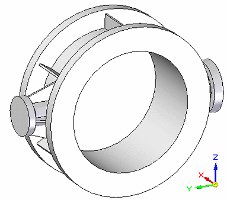
-
Create a thermal coupled study.
-
Select Simulation tab→Study group→New Study.

-
From the Study type list, choose Steady State Heat Transfer+Linear Static, and from the Mesh type list, choose Tetrahedral.
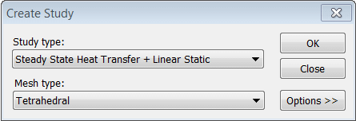
-
Click the Options button, and then verify that the following results options are selected:
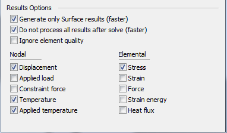
-
Click OK.
Note:Because this is a part file, the geometry is included automatically in the study. The new study is listed in the Simulation pane.
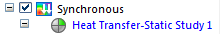
-
-
Define the structural loads and constraints.
-
Choose Simulation tab→Constraints group→Fixed
 , and select the two round faces on the sides of the part.
, and select the two round faces on the sides of the part. 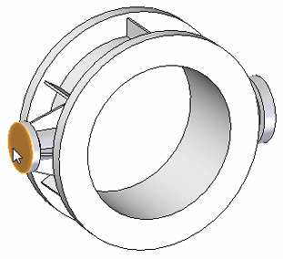
-
Right-click to accept and click to finish.
You can see the finished constraints on the model and in the Simulation pane.
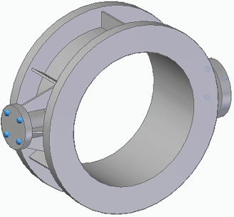
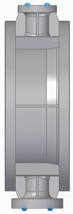
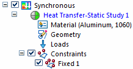
-
To account for the effect of gravity on the water pipe, select the Simulation tab→Body Loads group→Gravity command .
-
Right-click to accept the default gravity direction (pointing down) and the default value of 981.000 cm/s^2, and then click to finish.
You can see the gravity load in the graphics window and in the Simulation pane.
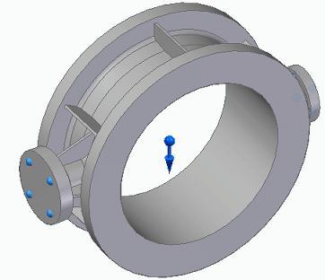
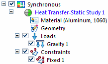
-
-
Define the thermal loads and constraints.
-
Apply a temperature load to specify the maximum expected water temperature. Choose Simulation tab→Thermal Loads group→Temperature
 .
. -
Select the inside cylinder, as shown below, and type 100.000 C in the Value box. (This is the equivalent of 212 degrees Fahrenheit.)
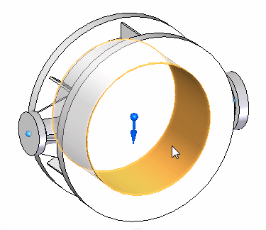
-
Right-click to enter the temperature, and then click to finish.
Note:The thermal Temperature load specifying the maximum water temperature acts as a thermal constraint on the model.
You can see the temperature load in the graphics window and in the Simulation pane.
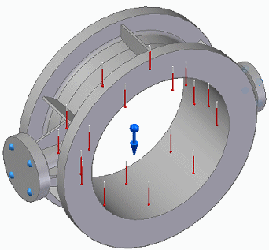
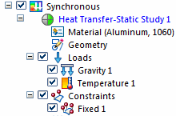
-
Apply a convection load to disperse heat from the water pipe. Select Simulation tab→Thermal Loads group→Convection
 , and then select all of the model surfaces except the inside cylinder. Tip:
, and then select all of the model surfaces except the inside cylinder. Tip:You can do this by dragging a box around the part, and then using Shift+click to deselect the inside cylinder.
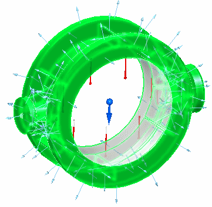
-
In the dynamic input box, do all of the following:
-
Press Tab to accept the default value of 1.000 W/m^2-K for the film coefficient, which is also known as the heat transfer coefficient.
-
Change the Ambient temperature value to 10.000 C. (This is the equivalent of 50 degrees Fahrenheit.)
-
Right-click to confirm the values.
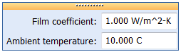
-
-
Click to finish.
You can see the convection load in the graphics window as well as in the Simulation pane.
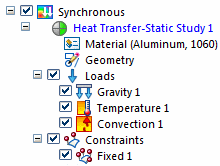
-
-
Mesh the model.
-
In the Simulation pane, turn off loads and constraints.
-
Select the Mesh command. Choose Mesh.
After a few moments, the meshed model is displayed.
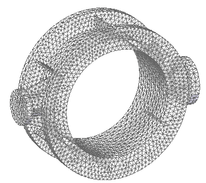
-
-
Click Solve
 .
.In a thermal coupled study, the thermal analysis is processed first, followed by the structural analysis.
After a couple of minutes, the Simulation Results environment is displayed. The default result plot, Von Mises Stress, is displayed in the graphics window. The value indicated by the red arrow is the Yield Stress value.
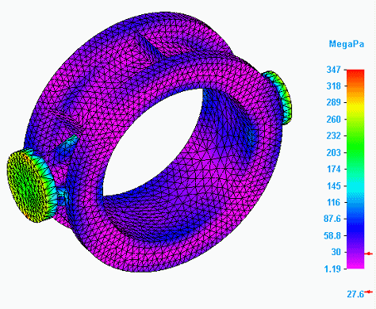
-
Review the thermal stress analysis results.
-
Expand the Results→Plots collector in the Simulation pane one level.
Observe that two categories of results—Thermal and Static—are generated by a thermal stress analysis coupled study:
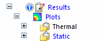
-
Expand the Plots→Static node.
Observe the two categories of plots generated by the linear static analysis (Displacement and Stress).
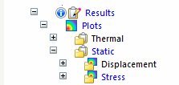
-
Expand the Plots→Static→Stress node.
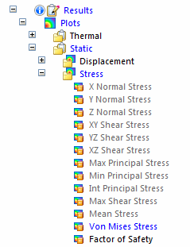
Observe the following:
-
The result plot that is currently displayed, Von Mises Stress, is listed in blue text.
-
The Factor of Safety result plot also was generated by default in the stress results; it is listed in black text.
-
The unprocessed result plots are listed in gray text.
-
-
Right-click the Factor of Safety plot name and choose View.
Notice that the Factor of Safety plot is displayed using the Spotlight color spectrum (red, yellow, green), as well as the All Results Scale (the actual factor of safety values). You can change these and other settings using the Color Bar tab. For example, you can select a User Defined Scale, and enter the minimum and maximum safety factor values applicable to your model.
Note:Factor of safety values are based on material stress values. The higher the value, the less likely the material is to fail. For more information, see Factor of safety plots in the Stress component plots help topic.
This result plot indicates you may want to mitigate heat by adding ribs to the pipe or by changing material.
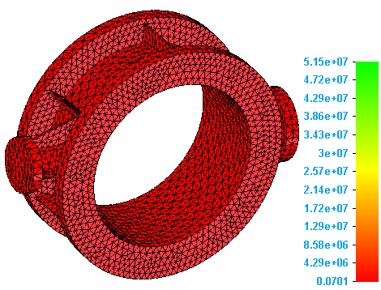
-
In the Simulation pane, double-click the plot name, Von Mises Stress, to redisplay it in the graphics window.
-
Select Home tab→Display Options
 , and then select the Deformation and Undeformed Model check boxes. Click Close.
, and then select the Deformation and Undeformed Model check boxes. Click Close.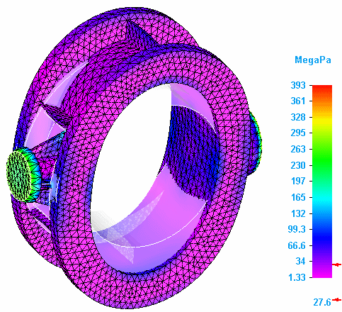
-
Expand the Plots→Thermal→Temperature node and the Applied Temperature node.
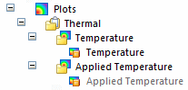
-
Double-click the Temperature result plot name to process and display the results.
Temperature plots show results on the primary model.
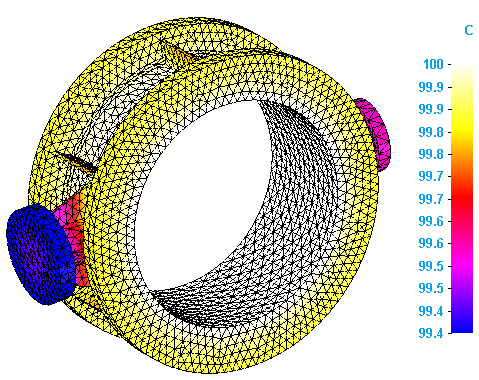
-
Double-click the Applied Temperature result plot name to both process and display the results.
-
Click Display Options
, and then select the Deformation check box. Click Close.Applied temperature plots show results on the deformed model.
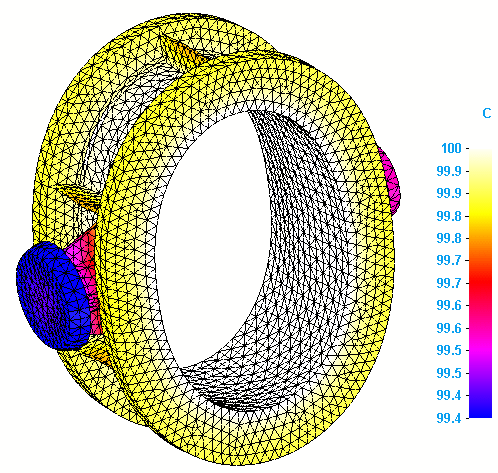
Tip:To generate the applied temperature plots automatically when you solve the study, select the Applied temperature check box in the Results section of the Create Study (or Modify Study) dialog box.
-
-
Save and close this file.